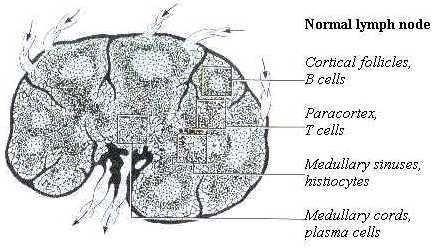
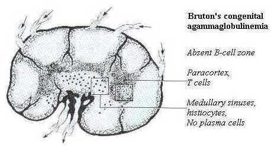

PRIMARY DISORDERS OF Ig PRODUCTION
Primary immunodeficits with predominating disorder of Ig synthesis develop as a result of B-lymphopoesis derangements. B-cellular immunodeficits are characterized by lack of Ig or defects in their isotypic spectrum. Cellular immunity is relatively intact, but due to disorder of antiidiotypic regulation there may be various autoimmune syndromes. As a rule, the clinical manifestations of congenital antibody deficits are postponed for 4-9 months, because earlier the newborn stay under defense of maternal passive transplacental immunity, established by transferred IgG.
As in phagocytosis or complement deficiency, the persons suffering from humoral immunodeficit commonly have decreased resistance towards the infections, provoked by encapsulated bacteria (“purulent flora”) – Staphylococci, Streptococci including S. Pneumoniae, Meningococci, Gonococci, Haemophilus influenzae, Pseudomonas aeruginosa etc. Topically, the most frequent are ENT infections, respiratory involvement (sinusitis, otitis, bronchitis, pneumonia, bronchiectases). Quite often skin is also involved, but gut infections are less common. The meningitis and sepsis are probable.
X-LINKED AGAMMAGLOBULINEMIA OF BRUTON. This is one of the most common forms of primary immunodeficiency and is characterized by the virtual absence from the serum of immunoglobulins, although small amounts of IgG may sometimes be present. It is an X-linked disease restricted to males and described by K.O. Bruton in 1952 in a 4 years old child suffering from recurrent bronchopulmonary infections. The syndrome has the incidence about 1/1000000.
Severe recurrent infections usually begin at eight to nine months of age, when the infant becomes depleted of maternal immunoglobulins. The most common offending organisms are pyogenic (e.g., staphylococcus, Haemophilus influenzae), and patients have recurrent conjunctivitis, pharyngitis, otitis media, bronchitis, pneumonia, and skin infections. Most viral and fungal infections are handled normally, because cell -mediated immunity is the predominant mode of defense against these pathogens. However, there are some curious and important exceptions to this generalization; affected individuals are at particular risk for development of vaccine-associated paralytic poliomyelitis as well as fatal ECHO-virus encephalitis. Susceptibility to hepatitis and to other enterovirus infections is also increased.

The classic characteristics, first described by Bruton, are those that would be expected from a primary B-cells deficiency. B cells are virtually absent in the blood except in very rare cases, hence the level of total Ig is below 100 mg %. Pre-B cells, which are large lymphoid cells with intracytoplasmic IgM but no surface immunoglobulins, are found in normal numbers in the bone marrow.
The lymph nodes and spleen lack germinal centers, and plasma cells are absent from the lymph nodes, spleen, bone marrow, and connective tissue. Cell content of lymph nodes is limited with T-zones and macrophages. Tonsils in particilar are poorly developed or rudimentary. There are, however, normal numbers of circulating and tissue T cells, and their function as measured by delayed hypersensitivity tests and allograft rejection is normal. For reasons that remain mysterious, there is a remarkably high frequency of various autoimmune connective tissue diseases in the Bruton disease patients. Dermatomyositis, lupus erythematosus, and diffuse vasculitis are also relatively common in these patients. Surprisingly, vasculitis in this disease occurs without immune complex formation, presumably due to delayed hypersensitivity mechanisms. Some authors believe that the etiology of Bruton’s arthritis is related to Mycoplasma infection. Another unpleasant feature of this disease is a considerable rate of lymphoid malignancies in Bruton’s patients – up to 6%. Infusion of Ig does not establish perfect anti-infectious protection, because of lack of IgA normal secretion. The pathogenesis of Bruton’s anomaly is related to the mutation of bpk gene, which encodes a catalytic subunit for one of pre-B cell cytoplasmic thyrosinekinases. Due to this pre-B cells are not able to respond normally for differentiating signals, hence maturation of pre-B into B-cells is hindered. Besides the absence of direct antibacterial Ig action, there is a serious decrease in phagocytes capability, owing to lack of opsonizing antibodies.COMMON VARIABLE IMMUNODEFICIENCY. This relatively common (1/50000) but poorly defined derangement probably represents a heterogeneous group of disorders. It may be congenital or acquired, sporadic or familial (with an inconstant mode of inheritance). The feature common to all patients (CVI affects equally both sexes) is hypogammaglobulinemia, generally affecting all the antibody classes but sometimes only IgG. It seems that CVI may be caused by inability of mature B-lymphocytes to become plasma cells. This can be related to their unresponsiveness for cytokines, lack of IL-2,4,6 ; increase of suppressing influences or effect of antilymphocytic autoantibodies. There is a linkage with some genes of Class III MHC region (encoding complement factors).
According to the WHO classification there are three different forms of common variable immunodeficiencies: (1) with predominant immunoregulatory B cell defect; (2) with predominant immunoregulatory T-cell disorder marked by (a) deficiency of T-helper cells; and (3) with autoantibodies to T and B cells.
Most patients belong to the first category. Onset of CVI manifestations occurs in them in elder adolescence or in third decade of life. They have normal levels of circulating B cells, which can recognize antigens and proliferate but fail to differentiate into plasma cells. Histologically the B-cell areas (i.e., the lymphoid follicles in the lymph nodes, spleen, and the gut) are markedly hyperplastic. These histologic findings support the notion that B cells can proliferate in response to antigen recognition, but terminal differentiation of B cells is abnormal. The symptoms are those of antibody deficiency without blood lymphopenia - that is, mostly recurrent infections. Infestation with the intestinal parasite Giardia lamblia also quite common and may lead to a sprue-like syndrome. Another peculiar feature is the occurrence in multiple organs of noncaseating granulomas with hypothetical microbial cause.
These patients also have a high frequency of autoimmune diseases, including rheumatoid arthritis, pernicious anemia, celiakia and hemolytic anemia. Lymphoid malignancy sometimes develops several years after the immunologic deficiency.
ISOLATED IgA DEFICIENCY. Isolated IgA deficiency is a very common immunodeficiency of Caucasians that occurs about one in 600 individuals of this descent and consists of the virtual absence of both serum and secretory IgA. In Mongoloids it occurs with 300-fold fewer rates, and is not described among Blacks.
It may be familial (with autosomal dominant or recessive trait) or acquired in association with toxoplasmosis, measles, CMV or some other virus infection. Sometimes it is provoked by drugs (penicillamine, phenitoin). In cases of exogenous provocation the mechanism is associated with autoimmune selective deletion of IgA-producing lymphocytes. There is a linkage with DR5 MHC allele and some genes of Class III MHC region (encoding complement factors).
It is generally believed that most individuals with this disease are completely asymptomatic, but according to some authorities IgA deficiency is commonly associated with some form of illness. In the groups of children, who use to be frequently ill (more than 8 episodes of infection diseases per year), Russian immunologists revealed at least 6% of IgA-deficient persons (D. Stephani, Ju. Veltishchev, 1975). In some series this percentage was up to 20%. Because IgA is the major immunoglobulin in external secretions, mucous defenses are weakened and infections occur in the respiratory, gastrointestinal, and urogenital tracts.
Symptomatic patients commonly present with recurrent sinopulmonary infections and diarrhea. Recent reports suggest that some individuals previously classified as having selective IgA deficiency are also deficient in IgG2 and IgG4 subclasses of immunoglobulin G. This group of patients is particularly prone to develop infections of gut, respiratory and urogenital tracts. Some of IgA-deficient patients have normal serum level of IgA, but it does not penetrate properly into natural secrets. This is manifested in persistent gut candidiasis and diarrhea. In addition, IgA-deficient patients have a high frequency of respiratory tract allergy and a variety of autoimmune diseases, particularly SLE and rheumatoid arthritis. The basis of the increased frequency of autoimmune and allergic diseases is probably associated with increase in IgE production, which may result from disorder of immune response cytokine regulation. Because secretory IgA normally acts as a mucosal barrier against foreign proteins and absobtion of foreign protein antigens triggers abnormal immune responses in vivo. For children with bronchial asthma 40-fold higher incidence of IgA deficit was reported, compared to average level in general population. The patients with IgA deficiency may respond with anaphylaxis for Ig-treatment, because serum antibodies to IgA are found in approximately 40% of the patients. Slight excess of low molecular weight IgM in these patients may be of some compensatory significance, because, according R.H. Buckley (1983) this immunoglobulin in monomeric form is able to bind secretory fragment of IgA and in small amounts – penetrate into mucosal secrets.
The basic defect is in the terminal differentiation of IgA B lymphocytes. Normally, the first IgA cells are detected in the 12-week-old fetus. These immature cells have surface IgM and IgD in addition to IgA. Transition to mature IgA B cells starts at birth, and in adults only 10% of the IgA B cells express surface IgM and IgD; the majority express only IgA. In most patients with selective IgA deficiency the number of IgA -positive B cells is normal, but most of them express the immature phenotype and very few of these cells can be induced to transform into IgA plasma cells in vitro. So, the inability to become plasma cells, probably is due to their inherent defect, for example unresponsiveness to certain signals.
IgG1-4 SUBCLASSES DEFICIENCY. This is rare humoral immunodeficit caused by autosomal-recessive deletions of C-region g - chain IgG genes in 14th chromosome. Infectious syndrome is not severe. Anomaly can be accompanied by IgA-IgM deficit.
ISOLATED IgM DEFICIENCY. This disorder is manifested with recklessly severe bacterial sinopulmonary, eye and meningeal infections. The common outcome is sepsis. B-cells of the patients do not produce IgM in vivo, but are able to give IgM response in vitro in mixed culture with T-helpers of healthy donors. Hence, the defect is located in T-helper functions.
Ig DEICIENCY WITH IgM EXCESS. This kind of immunodeficit is either X-linked or autosomal-recessive. Terminal differentiation of B-cells into IgG and IgA producing ones is aborted, but B-cells still produce IgM and IgD. IgM presents in serum in excess, IgD appears in significant amount in circulating form, which is unusual. Bacterial infections are accompanied by cold hemolytic anemia and other autoimmune syndromes (thrombocytopenia, agranulocytosis). The genetic defect is inherent to T-helpers, which do not have surface ligand gp39, designated for interaction with CD40 marker of B-cells. This particular event is main trigger for switch of B-cells for IgA-IgG production.
TRANSIENT HYPOGAMMAGLOBULINEMIA OF INFANCY. This is an anomaly, in which physiological neonatal hypogammaglobulinemia is abnormally prolonged. The healthy neonates are able to respond with Ig production, but their immune capacity is limited and mostly they produce IgM. Hence, within first 3 months of extrauterine life their IgG is, chiefly, of maternal origin. The antibodies and lymphocytes, obtained via colostrim and breast milk are exclusively important for support of neonatal immunity in breast-feeding. Colostrim contains also the glycoproteins, regulating the functions of neonatal T-helpers. Breast-milk Igs are able even pervades across gut mucosa in newborn of first 2 months of extrauterine age (R. Vollerthun 1977). 4th month of life is characterized by rapid decrease of serum Ig level, due to exhaustion of transplacental maternal Ig pool and intestinal barrier permeability fall. This is also facilitated by the changes in diet: breast milk after 4 months is no longer an exclusive food for an infant. Normally, during 7th month the serum level of Ig restores due to increase of body’s own capability for their biosynthesis. But, if to the age of 10 months the ability for Ig production stays below normal, the decreased serum Ig concentration persists, thus giving a foundation for the diagnosis of transitory infantile hypogammaglobulinemia. There is an opinion that it occurs in heterozygous carriers of the same gp39 defect, which causes Ig deficiency with IgM excess, discussed above. Hence, the reason for low Ig response is also the defect of T-B cooperation.
OTHER Ig DEFICITS. Some hereditary disorders are accompanied by significant weakening of Ig production. Among them are:
- Transcobalamine II deficiency – autosomal recessive disease with disorder of B-cell differentiation, accompanied by megaloblastic anemia and pancytopenia. The activity of methyl-malonyl-coenzyme A mutase is decreased. Due to unknown reasons, the T-cell functions are much less altered.
- Orotaciduria of I type and familiar biotindecarboxylase deficiency are also accompanied mainly by B-cell differentiation disorders.
- Duncan’s disease or X-linked lymphoproliferative immunopathy is an isolated recessive clonal defect in B-cell repertoire. The patients do not respond with antibodies on core antigen of EBV. As a result, such a person may die due to fulminate form of infectious mononucleosis or develop after EBV infection persistent agammaglobulinemia with pancytopenia and high risk of lymphoid neoplasms.
- Bloom’s syndrome and Fanconi’s anemia are characterized by derangement of nuclear reparase system. Lymphoid precursors perish due to lethal somatic mutations, which can not be properly corrected. Innate B-cell deficit is accompanied by decrease of T-cell immunity, which are discussed in details in the next chapter.
NEXT CHAPTER
OR